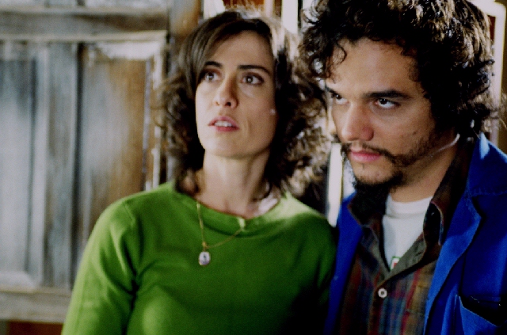

SANEAMENTO BÁSICO, O FILME terá sessões com audiodescrição
SANEAMENTO BÁSICO, O FILME, produção de 2007 da Casa de Cinema de Porto Alegre, com roteiro e direção de Jorge Furtado, terá duas sessões especiais com audiodescrição nesta semana. A audiodescrição é um recurso de acessibilidade que amplia o entendimento das pessoas com deficiência visual por meio de informação sonora, transformando o visual em verbal.
Na segunda-feira, 23 de agosto, às 10h da manhã, o filme será exibido com audiodescrição no Auditório da Escola de Gestão Pública da Secretaria Municipal da Administração, que fica no Edifício Intendente José Montaury (Rua Siqueira Campos, 1300, 14º andar.)
Na quinta-feira, 26 de agosto, também às 10h da manhã, a sessão de SANEAMENTO BÁSICO, O FILME, com audiodescrição, ocorrerá na Sala P.F.Gastal da Usina do Gasômetro.
As sessões são promovidas pelo Instituto Vivo, em parceria com a Secretaria da Acessibilidade de Porto Alegre, e fazem parte da programação oficial da 13ª Semana Municipal dos Direitos da Pessoa com Deficiência.
Também fazem parte da programação sessões inclusivas do espetáculo infantil "Rádio Chulé" (texto e direção de Letícia Schwartz, César Benites e Sérgio Fleck) e do passeio tradicional da Linha Turismo de Porto Alegre, da Secretaria de Turismo da capital gaúcha.
A programação e a inclusão do recurso de audiodescrição nas obras e no passeio foram elaboradas pelo grupo de profissionais formados pelo Curso Vivo de Audiodescrição, realizado pelo Instituto Vivo, em Porto Alegre de junho a agosto, sob a coordenação da professora Lívia Motta.
O resultado são três trabalhos com audiodescrição que serão apresentados nos dias 23, 25 e 27 de agosto. Para maior compreensão dos participantes, o filme, o passeio e a peça ganham uma sinopse impressa em Braille, que será distribuída aos participantes. O filme Saneamento Básico, numa parceria com a Casa de Cinema de Porto Alegre, terá duas exibições e ganha a audiodescrição já gravada no áudio.
Em 2007, o Instituto Vivo já havia realizado sessão inclusiva de SANEAMENTO BÁSICO, O FILME no Festival de Cinema de Gramado, mas em outro formato: com audiodescrição ao vivo, contando com o recurso de uma cabine e fones de ouvido (mesmo equipamento de tradução simultânea).
Mais informações sobre a programação da Semana no sítio "agregario".

Fernanda Torres (Marina) e Wagner Moura (Joaquim) em SANEAMENTO BÁSICO, O FILME
{kind=link}